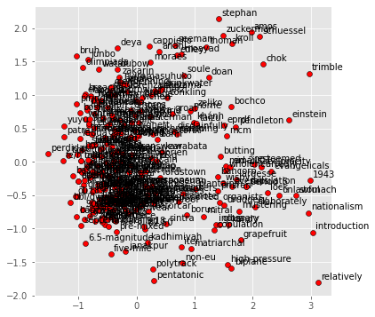
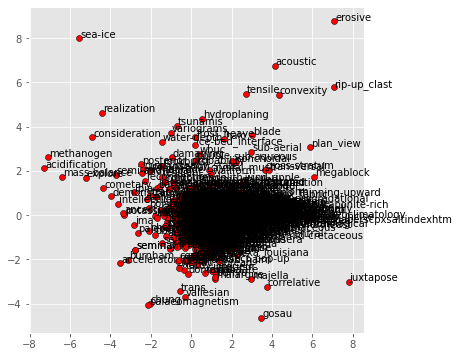
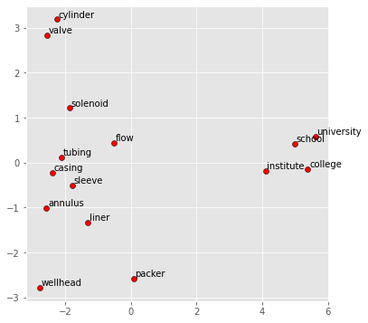

# Code extract from CS224n: https://web.stanford.edu/class/archive/cs/cs224n/cs224n.1214/materials/Gensim%20word%20vector%20visualization.html
import numpy as np
# Get the interactive Tools for Matplotlib
#%matplotlib notebook
%matplotlib inline
import matplotlib.pyplot as plt
plt.style.use('ggplot')
from sklearn.decomposition import PCA
from gensim.test.utils import datapath, get_tmpfile
from gensim.models import KeyedVectors, fasttext
from gensim.scripts.glove2word2vec import glove2word2vecPart 1: Word Vectors
CS224n: Natural Language Processing with Deep Learning.
In this section I try to use the knowledge of the word vector knowledge but using a different corpus - oil and gas corpus from the Language Technology Group at the University of Oslo.
Oil and Gas Corpus dataset
source: http://vectors.nlpl.eu/repository/ ID: 75
"creators": [
{
"email": "farhadno@ifi.uio.no",
"name": "Farhad Nooralahzadeh"
}
],
"dimensions": 400,
"handle": "http://vectors.nlpl.eu/repository/20/75.zip",
"id": 75,
"iterations": 5,
"vocabulary size": 285055,
"window": 5Word Vectors for Oil and Gas
# !pip install gensim=="3.8.3"Using Stanford GloVe word vectors
glove_file = datapath('/Users/castrma/Datasets/nlp/stanford_cs224n_corpus/glove.6B.100d.txt')
word2vec_glove_file = get_tmpfile("glove.6B.100d.word2vec.txt")
glove2word2vec(glove_file, word2vec_glove_file)(400000, 100)model = KeyedVectors.load_word2vec_format(word2vec_glove_file)model.most_similar('obama')[('barack', 0.937216579914093),
('bush', 0.9272854328155518),
('clinton', 0.8960003852844238),
('mccain', 0.8875634074211121),
('gore', 0.8000321388244629),
('hillary', 0.7933663129806519),
('dole', 0.7851964235305786),
('rodham', 0.7518897652626038),
('romney', 0.7488930225372314),
('kerry', 0.7472623586654663)]model.most_similar(negative='banana')[('keyrates', 0.7173939347267151),
('sungrebe', 0.7119239568710327),
('þórður', 0.7067720293998718),
('zety', 0.7056615352630615),
('23aou94', 0.6959497928619385),
('___________________________________________________________',
0.694915235042572),
('elymians', 0.6945434808731079),
('camarina', 0.6927202939987183),
('ryryryryryry', 0.6905654072761536),
('maurilio', 0.6865653395652771)]def analogy(x1, x2, y1):
result = model.most_similar(positive=[y1, x2], negative=[x1])
return result[0][0]
analogy('tall', 'tallest', 'long')'longest'def display_pca_scatterplot(model, words=None, sample=0):
if words == None:
if sample > 0:
words = np.random.choice(list(model.vocab.keys()), sample)
else:
words = [ word for word in model.vocab ]
word_vectors = np.array([model[w] for w in words])
twodim = PCA().fit_transform(word_vectors)[:,:2]
plt.figure(figsize=(6,6))
plt.scatter(twodim[:,0], twodim[:,1], edgecolors='k', c='r')
for word, (x,y) in zip(words, twodim):
plt.text(x+0.05, y+0.05, word)display_pca_scatterplot(model,
['coffee', 'tea', 'beer', 'wine', 'brandy', 'rum', 'champagne', 'water',
'spaghetti', 'borscht', 'hamburger', 'pizza', 'falafel', 'sushi', 'meatballs',
'dog', 'horse', 'cat', 'monkey', 'parrot', 'koala', 'lizard',
'frog', 'toad', 'monkey', 'ape', 'kangaroo', 'wombat', 'wolf',
'france', 'germany', 'hungary', 'luxembourg', 'australia', 'fiji', 'china',
'homework', 'assignment', 'problem', 'exam', 'test', 'class',
'school', 'college', 'university', 'institute'])
display_pca_scatterplot(model, sample=300)
Using Oil & Gas Dataset
glove_file = datapath('/Users/castrma/Datasets/nlp/oil_gas_corpus/model.txt')
word2vec_glove_file = get_tmpfile("oil_gas_corpus.word2vec.txt")
glove2word2vec(glove_file, word2vec_glove_file)(285055, 400)model_oilgas = KeyedVectors.load_word2vec_format(word2vec_glove_file, binary=False, unicode_errors='replace')model_oilgas.most_similar('flow')[('transport', 0.48656901717185974),
('centrifugal_force', 0.48010045289993286),
('outflow', 0.4763485789299011),
('overspill', 0.4571435749530792),
('sheetflow', 0.4376390874385834),
('discharge', 0.4367856979370117),
('overflow', 0.43440309166908264),
('high-concentration', 0.4244910478591919),
('flowa', 0.4212402403354645),
('pseudoplastic', 0.42077863216400146)]model_oilgas.most_similar('valve')[('shell', 0.5183584094047546),
('dorsal_valve', 0.48694050312042236),
('ventral_dorsal', 0.485264390707016),
('articulated_bivalve', 0.4750818610191345),
('dorsal_ventral', 0.4613734185695648),
('ventral_valve', 0.46133625507354736),
('disarticulate_valve', 0.45661646127700806),
('ostracode_valve', 0.44902393221855164),
('ventral', 0.444169282913208),
('frustule', 0.4327666759490967)]model_oilgas.most_similar('test')[('testing', 0.7121846079826355),
('check', 0.525799572467804),
('verify', 0.5179010629653931),
('reject_null', 0.497518926858902),
('validate', 0.4902019798755646),
('two-sample', 0.46922433376312256),
('t-test', 0.45723795890808105),
('kolmogorov-smirnov', 0.45683586597442627),
('evaluate', 0.4561232924461365),
('experiment', 0.45235615968704224)]model_oilgas.most_similar('tubing')[('casing', 0.6231992840766907),
('liner', 0.6099902391433716),
('coiled_tubing', 0.6039292812347412),
('annulus', 0.5939675569534302),
('tubing_string', 0.5494505167007446),
('coil_tubing', 0.547163188457489),
('cylinder', 0.5449304580688477),
('sleeve', 0.5374123454093933),
('wellhead', 0.534071683883667),
('packer', 0.5303264856338501)]display_pca_scatterplot(model_oilgas, sample=1000)
# 'coiled_tubing', 'tubing_string', 'coil_tubing' noy in vocabulary?
display_pca_scatterplot(model,
['tubing', 'valve', 'flow', 'solenoid',
'casing', 'liner', 'annulus', 'cylinder', 'sleeve', 'wellhead','packer',
'school', 'college', 'university', 'institute'])